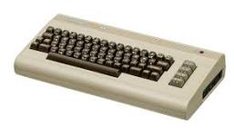

The C64 is one of the most famous computers in all of history; low estimates place the sales figure at around 12.5m units sold. What really defines the C64 is not its sales, however, but its capabilities and advancements for the computing industry.

A picture of the C64.
Released in 1982, the C64's specs were pretty advanced for its time. It featured 16 color graphics, featuring text,
tile, and bitmap display modes. It featured 64KB of RAM (the figure that gave it its name) and a built-in programming
language, BASIC. In addition, it featured a remarkable sound chip; the SID chip, which primarily controls sound but also
paddle controllers, sounds more like a full subtractive synth and less like the NES.
(There are some great pieces of music for the platform by the way. I encourage you to browse through the HVSC collection
or find SID music on YouTube.)
There were some great games made for the platform -- M.U.L.E. is an amazing strategy game which holds up to this day (in my opinion) -- and there continues to be games and demos made for the computer that really show off its true capabilities. Someone even ported Eye of the Beholder to the C64, a 2.5D game a la Ultima Underworld. Originally running on PC and later ported to the Amiga, it is a very impressive downport. You can find the entry in the Lemon64 database here.
One day, I wish to write a game for the C64. I have already tried to screw around using BASIC, but a proper game written in assembly (or C) would be very cool indeed. Still, I have yet to master the basics of either, so that is for another day.
(Seriously, play a round of M.U.L.E. against bots or people. There are modern ports for it, including a free version known as Planet M.U.L.E. It's a load of fun.)